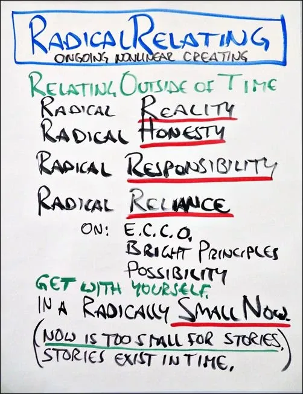
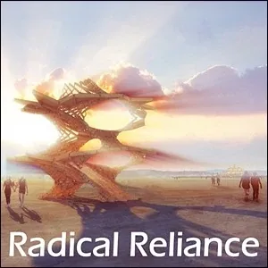
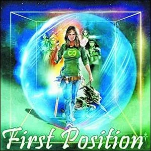
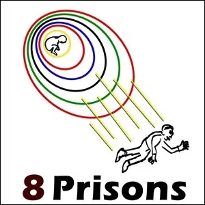
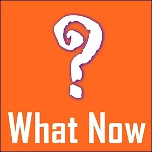
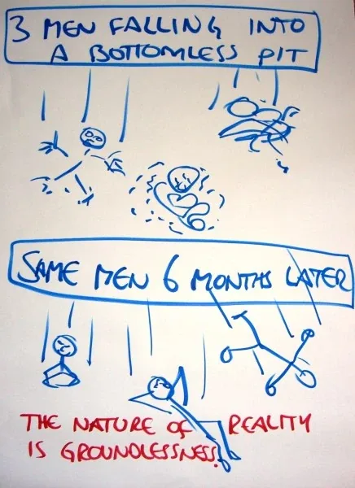

**Naked **
Without
A Plan
- …
**Naked **
Without
A Plan
- …
- Naked Without A Plan? - Radically Relating may be your deepest longing, yet no one has shown you how to do it. New skills are required. These skills are from Archearchy, next culture - the culture that naturally emerges as Matriarchy and Patriarchy have run their course. - So many pre-existing conditions may interfere with your attempts at Radical Relating. For example, you are not even initiated into simple adulthood. You are terrified of becoming present and scared to death of connecting with another Being. You are so frightened of being truly seen. You have unhealed childhood wounds, and your Gremlin undermines intimacy to keep you your familiar isolation. - All these challenges are worth intelligently engaging... because Radical Relating is possible, and we find it to be excellent.

- Map of Radical Relating - Radical Relating starts with being Present with yourself in a - Minimized Now.- In a minimized NOW there is no time. - Storiesexist in time.- Therefore, in such a minimized NOW, there is no room for Stories. - In this condition, you have the Possibility of: - Radical Reality - Radical Honesty - Radical Responsibility - Radical Reliance (e.g. on E.C.C.O., on your Bright Principles, on your Archetypal Lineage, etc.) - Ongoing nonlinear creation from the Adult and Archetypal Ego States.- Components Of Radical Relating









- The basis of intimacy is letting yourself be known.- # - Clinton Callahan
- Hints For Radical Relating - experimental guidelines for how to create and explore radical relating - ### START BY DYING- This hint is about Minimizing your NOW until it is so small that there is no room for the past or the future, only for the tiniest immediate present moment. New skills are required to stay in this - Minimized NOW, a skillset called- Become Present.- When you Minimize your NOW, there is no more 'have to', or 'must', or 'supposed to be', because all these rules or expectations come from external authority figures, not from yourself. They are no longer part of you. - Suddenly, without the past to complain or be nostalgic about, and without a future to be afraid of or to try to control, those previous domains dissolve away like a mirage. - Your 'big life' dies. Distractions disappear. What remains in a Minimized NOW is the same as what remains after an 'air burial' (an 'air burial' is when you leave a corpse at the top of the mountain for the vultures, ravens, rats, flies, ants, and wild dogs to devour...) namely, nothing. - In this Minimized NOW you have the space in which to consider: - " - What do I want to speak about with this person across from me before they die?"- " - What would be the most important for me to share with them if this is our last moment together?"- " - What do I want to do with them before I have no chance to do anything with them ever again?"- This is what you can do together now - the essential, the core, the basic, the authentic, the real. - This is how to begin Radical Relating. Die first. - ### PULL THE RUG OUT FROM UNDER YOURSELF- The 'Rug' is what you stand on to 'be yourself' in the world. The 'Rug' is your beliefs, conclusions, assumptions, projections, talents, interpretations, memories, positionality, whatever you use to make your current experience have meaning to you right now. - You know best what the Rug is for you, because you keep secrets from others about what is 'true for you' that you hold onto like a life raft so they cannot get to you. - This means you are also the one best one to pull the Rug out from under your own feet. - If you successfully 'pull the Rug out from under your own feet', then you will be standing on nothing. - As the Buddhist monk Pema Chodron says, " - The nature of reality is groundlessness."- You no longer have pretense. - You are no longer legitimized. - You lack all confirmation. - Nothing certifies your reason for Being. - You have achieved meaninglessness, a moment of no bullshit. - Cherish this experience. - The bullshit-less state is rare in modern human experience. - Because you have done this to yourself, you have no one to blame for any discomforts. Discomforts are caused by stories. No stories, no discomforts. - Keep breathing. - Keep falling. - ### VULNERABILITY- Vulnerability as a skill of Radical Relating is far from the concept of vulnerability in New Age context. It is considered that being vulnerable means to cry, or be sad, or share where you are stuck or a victim, where you don't know, where you need help. Vulnerability is often equated with weakness. Being able to be weak is a powerful skill, and gift. Being authentically weak is being vulnerable.- However, vulnerability is not limited to being weak. - You are vulnerable: - When you say what you want, and what you don't want
- When you make boundaries,
- When you take a stand for the stand that you take
- When you commit
- When you commit to someone else's commitment
- When you refuse to be sucked into someone's bullshit
- When you hold your sword at people's neck
- When you stand in your own clarity and power
- That is (also) being Vulnerable. - Because you are at risk, because you are taking a risk. Because you are not protecting yourself being your Box and Gremlin survival strategy. - Being vulnerable is being authentic.
Being vulnerable is radically relating.

-
BULLSHIT- Most of what you say is - Bullshit. You are so- Contaminated (archived — not captured)and identified with your- Boxthat you barely speak from your- AdultEgo-state.- In order to Radically Relate, - become committed (archived — not captured)to the person in front of you. Be so committed to them, that you- Shift Identityinto the Archetype of the- Warrior or Warrioress,- Sword of Clarityin hand, and do not tolerate any of their Bullshit. Not one moment. Every time they speak from their Child- Ego-state, tell them. Every time they speak from their Gremlin or Parent. Every time they are speaking or behaving as their Box, thinking that they are being themselves, tell them.- Shifting Identity into the Archetype of the Warrior or Warrioress is scary. You are entering Archetypal Domains. The Archetypal demands you to be able to withstand uncompromising forces of nature. Clarity, for example, is uncompromising: it happens or it does not. To hold a space of relationship with Clarity takes unwavering commitment. It takes commitment to the other person, and to yourself. To hold the space for Clarity to happen even if your Box is completely freaking out. Even if you are breaking all your childhood courtesy rules. If you let anything 'slide by' your Sword, the flow of power coming from the Clarity stops. - You can not - Be-Withanother Being when they are in their Bullshit (let alone when you are in your own Bullshit). Tell them: "- I want to Be-With you. The real you; your" If you don't say what you want, then you are lying to yourself. This is- Being. Not your Child, not your Gremlin, your Box or your Parent. You.- Radical Honesty.- ### STAND ON NOTHING- Who are you if there is no problem? No conflict? No tension? No plan? No goal? Nothing you are supposed to be doing? - ### HOLD NO ASSUMPTIONS- ### USE 'NOT-KNOWING' AS A RESOURCE- ### LEARN TO FLY- ### IT ONLY TAKES ONE...- If you are not reacting, why would the other person react to you? - If you do not defend your opinions, then the other person does not have to defend theirs. They are finally safe around you. You can be together. - If your Gremlin is not attacking the other person for their Box being different from yours, then their Gremlin does not have to attack your Box. The Gremlins can relax and you can find a completely new way of being together.
- Experiments for Being Naked Without A Plan
 - Matrix Code - NAKEDWIT.00 - Matrix Code - NAKEDWIT.00 - Matrix Code - NAKEDWIT.00 - Matrix Code - NAKEDWIT.00 - Matrix Code - NAKEDWIT.00 - Matrix Code - NAKEDWIT.00 - Matrix Code - NAKEDWIT.00 - Matrix Code - NAKEDWIT.00 - Matrix Code - NAKEDWIT.00 - Matrix Code - NAKEDWIT.00
- Matrix Code - NAKEDWIT.00 - Matrix Code - NAKEDWIT.00 - Matrix Code - NAKEDWIT.00 - Matrix Code - NAKEDWIT.00 - Matrix Code - NAKEDWIT.00 - Matrix Code - NAKEDWIT.00 - Matrix Code - NAKEDWIT.00 - Matrix Code - NAKEDWIT.00 - Matrix Code - NAKEDWIT.00 - Matrix Code - NAKEDWIT.00 - NOTE:This website is a- Bubble in the Bubble Map- StartOver.xyz- doorway- experiments- upgrade your thoughtware- point of origin- create- possibility- knowledge- about. Your- thoughtware- with. When you- change your thoughtware- liquid state- reorganizes- feelings- emotions- upgrading your thoughtware- build matrix- consciousness (archived — not captured)- low drama- reactivity- collectively build- responsibly- RADRELAT.00to log your Matrix Point for reading this website on- StartOver.xyz
- NOTE:This website is a- Bubble in the Bubble Map- StartOver.xyz- doorway- experiments- upgrade your thoughtware- point of origin- create- possibility- knowledge- about. Your- thoughtware- with. When you- change your thoughtware- liquid state- reorganizes- feelings- emotions- upgrading your thoughtware- build matrix- consciousness- low drama- reactivity- collectively build- responsibly- NAKEDWIT.00to log your Matrix Point for reading this website on- StartOver.xyz